User Guide: The Library IEC60730 Integration¶
This document provides instructions for integrating the Library IEC60730 into a project.
This will guide the developer to install the required software. Then guide the configuration of a project and integrate the source code into the project.
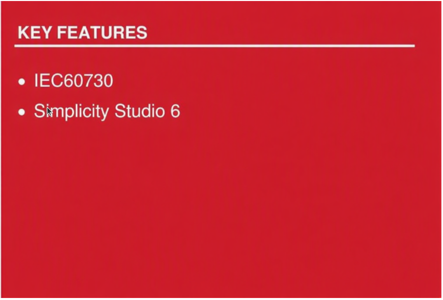
SILICON LABS
Contents¶
2. Install the required software
3. Add an extension to Simplicity Studio
4. Generate an example project
6. Add the source code to the project
7. Integrate code into the project
Table of pictures¶
Figure 1 Adding Extension to SDK
Figure 2 Browse to extension location
Figure 4 Example Project Selection
Figure 5 Project Configuration
Figure 6 Project generation in workspace
Figure 8 CRC-16 and CRC-32 scripts
Figure 9 Output command from the Post-build Steps
Figure 10 Result after Post-build complete
Figure 11 Components support library IEC60730
Figure 12 Add source code library IEC60730
Figure 13 Assembly code algorithm MARCHC for GCC compiler
Figure 14 Flow chart of the library IEC60730
Figure 15 Demo OEM files integrated with Library IEC60730
Figure 16 Configuration for watchdog module
Figure 17 Configuration for system clock module
1. Background¶
The IEC60730 is a safety standard used in household applications. It defines the test and diagnostic method that ensures the safe operation of devices. We provide the test of the following components: CPU registers, variable memory check, invariable memory check, program counter check, clock check, and interrupt check.
At the time of this writing, the library IEC60730 has been tested on two devices EFR32xG23 and EFR32xG24 on Simplicity Studio 6 (SS6) with toolchain GNU ARM v12.2.1 and SDK version 2026.6.0.
2. Install the required software.¶
We use the third-party software SRecord to calculate CRC value. Firstly, you need to install this software. If you're using Windows OS, you can go to the link of this software (link above), download the installation, and run the installer to install. If you're using Ubuntu OS, please follow the installation instructions below.
$ sudo apt update
$ sudo apt install srecord
3. Add an extension to Simplicity Studio¶
The safety library IEC60730 is supported by adding the IEC60730 extension, which is built using the software environment.:
-
OS-Ubuntu 20.04
-
Simplicity Studio 6
-
Simplicity SDK Suite v2026.6.0
This project is organized as an extension of Simplicity Studio. This project is built upon SSDK version 2026.6.0, GNU toolchain V12.2.1. The user can download the same version of SSDK from PACKAGES > PACKAGES MANAGER > Simplicity SDKs > Add new SDK > Simplicity SDK 2026.6.0 and Simplicity Studio V6 download link Simplicity Studio V6.
To create and build demo projects, the user must add the IEC60730 extension to Simplicity Studio. The procedure would be SETTING > SDKs > Simplicity SDK Suite v2026.6.0 > Add Extension.
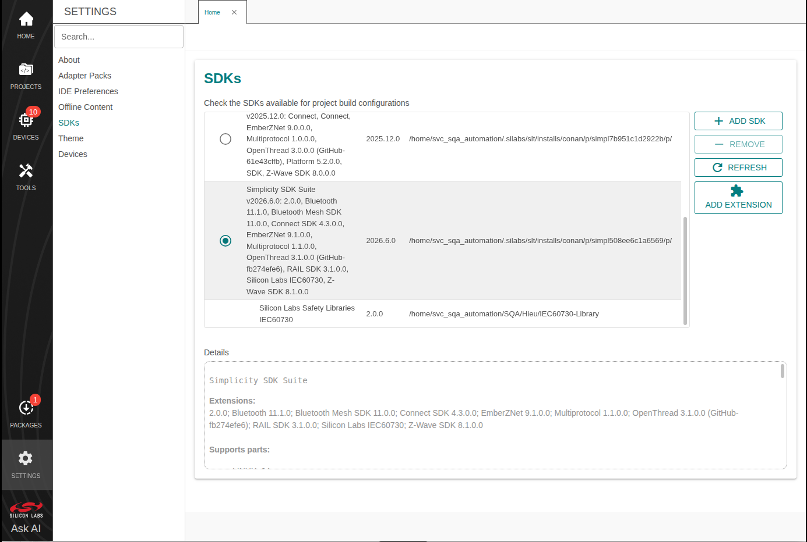
Figure 1 Adding Extension to SDK¶
Press Browse to find the directory of this extension. Then choose the folder that has the file name iec60730.slce. Simplicity Studio will detect SDK extensions automatically. Click OK then Apply and Close
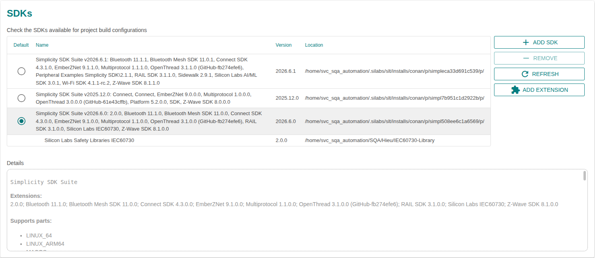
Figure 2 Browse to extension location¶
4. Generate an example project.¶
Before using Simplicity Studio to generate the project, you need to add the IEC60730 extension. Please remember the following text:
"This extension supports a demo example for EFR32MG families"
Start a project, select DEVICES and choose Devices you can connect. For example, you can select EFR32FG23 2.4GHz 20 dBm Radio Board (Rev A00) in the Target Boards section, with the Target Device set to EFR32FG23B020F512IM48 as shown in the image below.
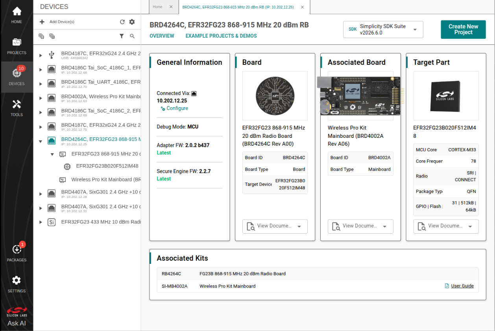
Figure 3 Create new project¶
To create a new Simplicity Studio® 6 (SSv6) project, follow these three dialog steps:
-
Target, SDK, and Toolchain
-
Examples
-
Configuration
An indicator at the top of the dialog will show you your current position in the process. You can click Back at any time to return to a previous dialog if you need to make changes.
In Example Project Selection, use the checkboxes or keywords to find the example of interest. To create a radio board example IEC60730 Demo, search the keyword iec60730 in the search box, related examples will show. Choose IEC60730 Example Demo. Click Create
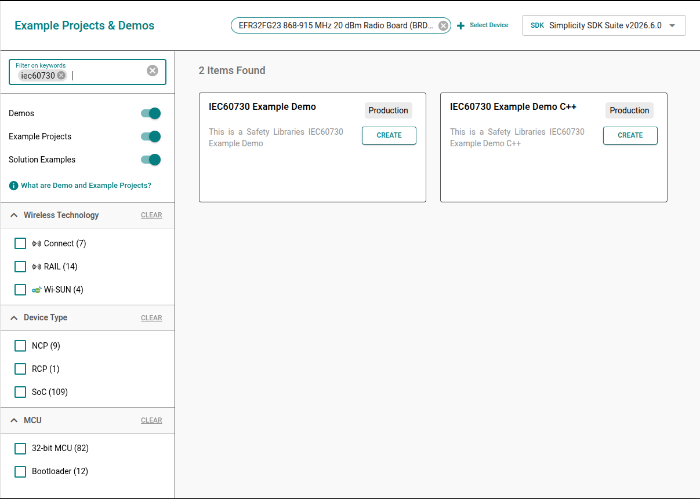
Figure 4 Example Project Selection¶
In Project Configuration Selection, rename and location your project if you want. For the three selections under Copy contents, you can choose any of the selections you want.
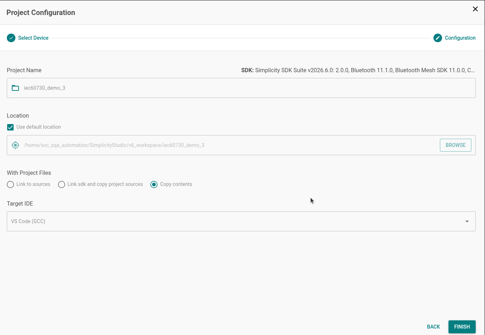
Figure 5 Project Configuration¶
Once you finish project creation, the Simplicity IDE perspective opens. There may be a slight delay in the initial configuration.
The project typically opens README tab, which contains an example project description, and OVERVIEW tab.
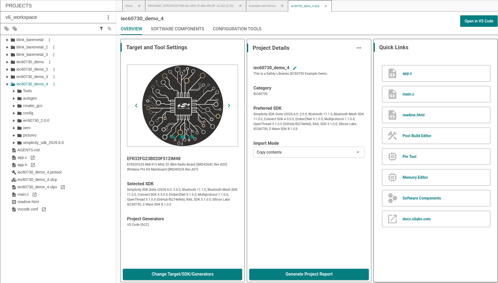
Figure 6 Project generation in workspace¶
For building the project, select Open in VS Code to synchronize the project with Visual Studio Code. Then, open the Extensions view in VS Code and install the Simplicity Studio for VS Code extension. After installation, click the hammer icon to build the project, or right-click the project and select Build Project.
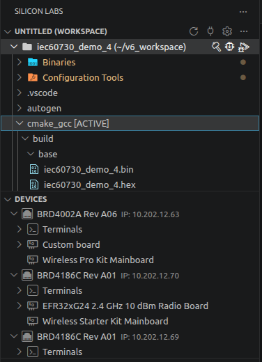
Figure 7 Build Project¶
5. Edit the post-build steps.¶
By default, after building the project, firmware files in *.bin, *.hex, and *.s37 formats will be created.
Modify the post-build steps so new firmware images are generated with a CRC value written into FLASH at the check_sum symbol. Scripts sl_iec60730_cal_crc16.sh and sl_iec60730_cal_crc32.sh produce *_crc16 / *_crc32 images (documented generically as *_crcNN). They run on Windows and Ubuntu and live under iec60730_<version>/lib/crc/.
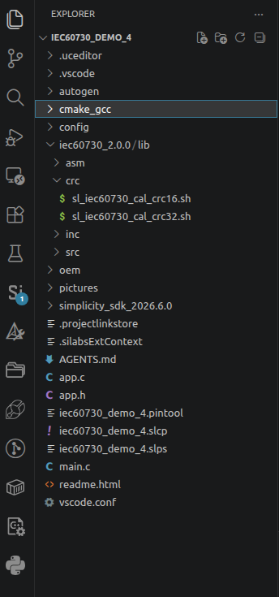
Figure 8 CRC-16 and CRC-32 scripts¶
Detailed parameters are described in Support calculate CRC.
Important — customer notice (CRC-16 production path)
When
SL_IEC60730_CRC_DEBUG_ENABLEis disabled (0) andSL_IEC60730_USE_CRC_32_ENABLEis disabled (0) (default CRC-16 mode inconfig/sl_iec60730_config.h):
- The post-build step must run
sl_iec60730_cal_crc16.shso a*_crc16image is generated with the reference CRC stored atcheck_sum.- You must flash the
*_crc16firmware (*.bin/*.hex/*.s37), not the plain image without the CRC suffix.The address list passed to the script must match the Flash regions used at runtime in OEM IMC configuration (for example in
oem_iec60730.c). Otherwise runtimeiec60730_ref_crcand storedSL_IEC60730_REF_CRC(check_sum) will differ and IMC POST/BIST will fail.If
SL_IEC60730_USE_CRC_32_ENABLEis enabled (1), usesl_iec60730_cal_crc32.shand flash*_crc32instead.- If
SL_IEC60730_CRC_DEBUG_ENABLEis enabled (1), IMC compares against the runtime-calculated reference and does not require a matching storedcheck_sum; the CRC post-build image is still recommended for production builds.
Studio-style example (GCC)¶
Single continuous region (start address to check_sum):
arm-none-eabi-objdump -t -h -d -S '${BuildArtifactFileBaseName}.axf' >'${BuildArtifactFileBaseName}.lst' && bash ${ProjDirPath}/iec60730_2.0.0/lib/crc/sl_iec60730_cal_crc16.sh ${BuildArtifactFileBaseName} "<path_build_dir>" "<path_srecord_bin>" GCC "0x8000000"
Multiple regions (must match OEM Flash IMC regions; demo GCC offsets example):
arm-none-eabi-objdump -t -h -d -S '${BuildArtifactFileBaseName}.axf' >'${BuildArtifactFileBaseName}.lst' && bash ${ProjDirPath}/iec60730_2.0.0/lib/crc/sl_iec60730_cal_crc16.sh ${BuildArtifactFileBaseName} "<path_build_dir>" "<path_srecord_bin>" GCC "0x8000000 0x8000050 0x80000a0 0x80000f0 0x8000140 0x8000190"
These six addresses are three start/end pairs. They come from the demo OEM table in oem_iec60730.c (OEM_FLASH_OFFSET = 20 words → 0x50 bytes per region, with one-region gaps). See Section 7.2 for the OEM code to modify and why multiple regions are used.
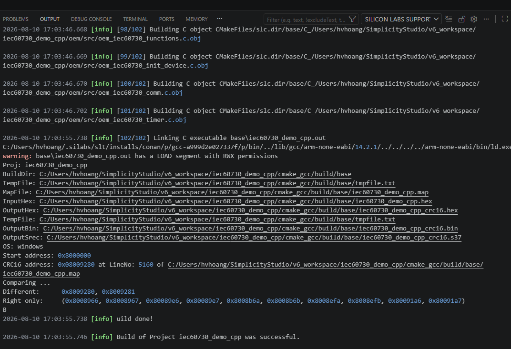
Figure 9 Output command from the Post-build Steps¶
Add post-build CRC (CMake)¶
Apply CRC post-build in cmake_gcc/CMakeLists.txt. Append to the existing POST_BUILD (after .s37 / .hex / .bin). Do not wrap the CRC invocation in bash -c "..." — nested quotes break under Windows cmd.exe. On Windows, bash must be available (MSYS / MinGW / Cygwin / Git Bash).
Example for CRC-16 (SL_IEC60730_USE_CRC_32_ENABLE disabled), multi-region list aligned with the demo OEM Flash IMC regions:
add_custom_command(TARGET iec60730_demo
POST_BUILD
COMMAND ${CMAKE_OBJCOPY} ${OBJCOPY_SREC_CMD} "$<TARGET_FILE:iec60730_demo>" "$<TARGET_FILE_DIR:iec60730_demo>/$<TARGET_FILE_BASE_NAME:iec60730_demo>.s37"
COMMAND ${CMAKE_OBJCOPY} ${OBJCOPY_IHEX_CMD} "$<TARGET_FILE:iec60730_demo>" "$<TARGET_FILE_DIR:iec60730_demo>/$<TARGET_FILE_BASE_NAME:iec60730_demo>.hex"
COMMAND ${CMAKE_OBJCOPY} ${OBJCOPY_BIN_CMD} "$<TARGET_FILE:iec60730_demo>" "$<TARGET_FILE_DIR:iec60730_demo>/$<TARGET_FILE_BASE_NAME:iec60730_demo>.bin"
# .lst + CRC-16 (*_crc16.bin/hex/s37). Use bash on Windows (MSYS/MinGW/Cygwin).
COMMAND ${CMAKE_OBJDUMP} -t -h -d -S "$<TARGET_FILE:iec60730_demo>" > "$<TARGET_FILE_DIR:iec60730_demo>/$<TARGET_FILE_BASE_NAME:iec60730_demo>.lst"
COMMAND bash "${CMAKE_CURRENT_LIST_DIR}/../iec60730_2.0.0/lib/crc/sl_iec60730_cal_crc16.sh"
"$<TARGET_FILE_BASE_NAME:iec60730_demo>"
"$<TARGET_FILE_DIR:iec60730_demo>"
"C:/Program Files/srecord/bin"
GCC
"0x8000000 0x8000050 0x80000a0 0x80000f0 0x8000140 0x8000190"
)
For a single continuous Flash range, replace the last argument with "0x8000000" and set OEM IMC to one region from SL_IEC60730_ROM_START to SL_IEC60730_ROM_END.
Use sl_iec60730_cal_crc32.sh when SL_IEC60730_USE_CRC_32_ENABLE is enabled. On Linux, pass "" for the srecord path field. After a successful post-build, flash *_crc16.* or *_crc32.*, not the plain image.
Note
Required when
SL_IEC60730_CRC_DEBUG_ENABLEis0andSL_IEC60730_USE_CRC_32_ENABLEis0: runsl_iec60730_cal_crc16.shin post-build and flash<project_name>_crc16(*.bin/*.hex/*.s37). The plain image does not contain a valid reference CRC atcheck_sum, so IMC will fail.Keep the script address list identical to the Flash regions configured for IMC in your OEM code.
If, during project configuration, you choose Link to SDK and Copy Project Structures or Link to Source, copy
sl_iec60730_cal_crc16.shorsl_iec60730_cal_crc32.shinto thelib/crcfolder of your project directory (or point the CMake path atiec60730_<version>/lib/crc/).After the build completes, Post-build creates
<project_name>_crc16or<project_name>_crc32files with extensions*.bin,*.hex, and*.s37.
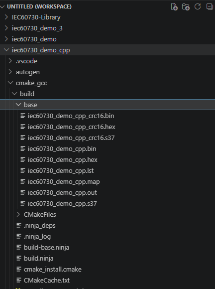
Figure 10 Result after Post-build complete¶
6. Add the source code to the project.¶
In our example, after adding the SDK extension, the software component will have a few components that support adding code files (*.c, *. s) of Library IEC60730 to the project:
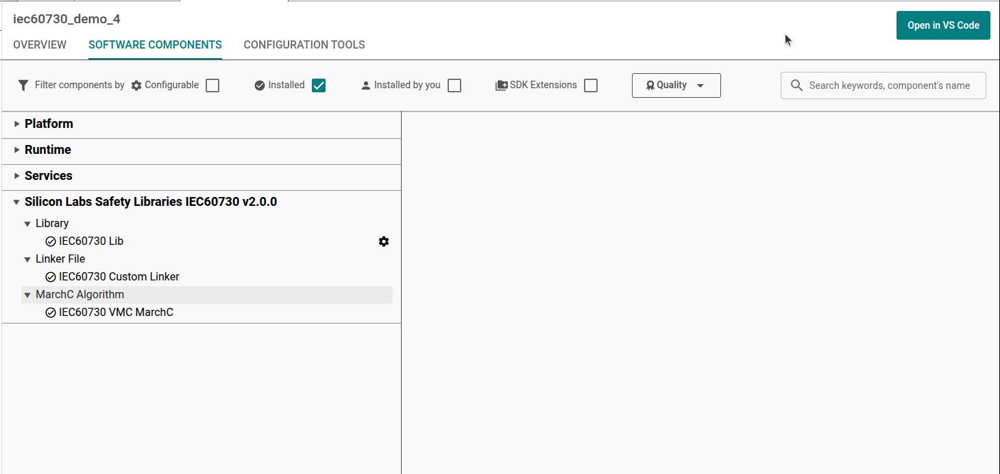
Figure 11 Components support library IEC60730¶
When you install these components, the source code library IEC60730 will be added. For example:
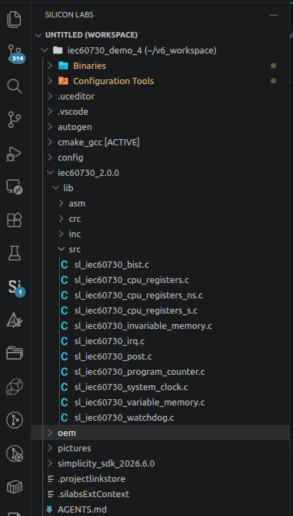
Figure 12 Add source code library IEC60730¶
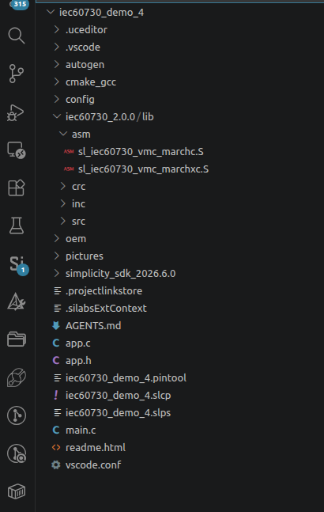
Figure 13 Assembly code algorithm MARCHC for GCC compiler¶
7. Integrate code into the project.¶
The library IEC60730 has been divided into 2 main test phases: Power on Self-Test (POST) and Build In Self-Test (BIST). Figure 13 Flow chart of the library IEC60730 shows the basics of the library IEC60730 integration into a user software solution.
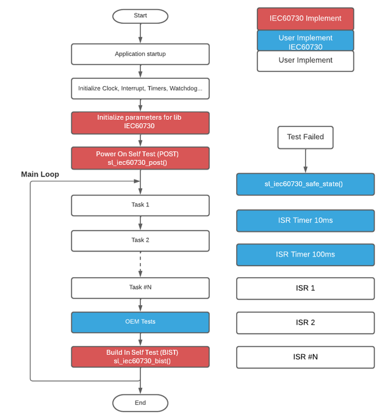
Figure 14 Flow chart of the library IEC60730¶
In our example, we have added a demo oem foler (Original equipment manufacturer) to integrate with the library IEC60730 to test steps such as flow charts fully.
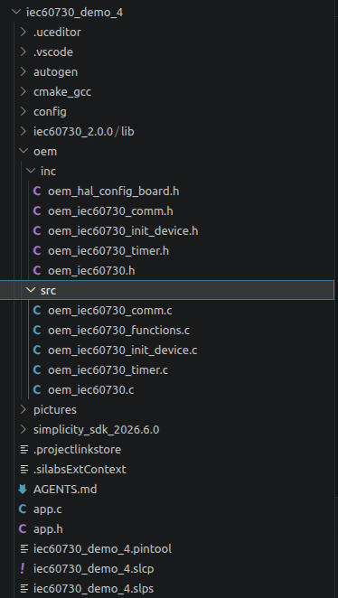
Figure 15 Demo OEM files integrated with Library IEC60730¶
If you want to add your OEM code and don't want to use our OEM files demo, you COULD add your OEM code via the following steps below:
1. Requires declaration and initialize variables for IEC60730 library with constant values. Refer function oem_iec60730_init in file oem_iec60730.c.¶
sl_iec60730_vmc_test_multiple_regions_t oem_vmc_test;
sl_iec60730_imc_test_multiple_regions_t oem_imc_test __CLASSB_RAM;
sl_iec60730_irq_cfg_t oem_irq_config;
These three variables are used for interrupt, invariable memory check and variable memory check.
2. To perform an invariable memory check, configure OEM Flash regions (must match post-build CRC script)¶
The IEC60730 library uses CRC for Flash (IMC). CRC can use GPCRC hardware or software via:
#define SL_IEC60730_CRC_USE_SW_ENABLE
If hardware CRC is used, initialize GPCRC before the Flash test.
The library supports two methods:
- Single continuous region: from a Flash start address to
check_sum(SL_IEC60730_ROM_END). - Multiple discontinuous regions: start/end pairs for each area to protect (gaps between regions are not included in the CRC).
Why the demo uses multiple regions¶
The demo configures three Flash regions (not the full image) to show how IMC can protect selected Flash ranges when code or data is split (for example several application/image sections with unused gaps between them). That matches the multi-region capability described in the IMC library documentation.
In the demo, OEM_FLASH_OFFSET is counted in uint32_t pointer units. For GCC, OEM_FLASH_OFFSET = 20 → each region is 20 × 4 = 80 bytes (0x50). Regions are placed with a one-region gap between them so the CRC deliberately skips the hole:
| Region | Start | End (exclusive) | Size |
|---|---|---|---|
| 0 | 0x08000000 |
0x08000050 |
0x50 |
| 1 | 0x080000A0 |
0x080000F0 |
0x50 |
| 2 | 0x08000140 |
0x08000190 |
0x50 |
Gaps 0x08000050–0x080000A0 and 0x080000F0–0x08000140 are not CRC’d. The post-build address list is therefore:
0x8000000 0x8000050 0x80000a0 0x80000f0 0x8000140 0x8000190
(start0 end0 start1 end1 start2 end2).
OEM code you must modify — oem/src/oem_iec60730.c¶
Highlight and edit these symbols so runtime IMC matches your product Flash map and Section 5 post-build script arguments:
/* --- MODIFY: number of Flash IMC regions --- */
#define OEM_NUM_FLASH_REGIONS_CHECK 3
#if defined(__GNUC__)
/* --- MODIFY: region size in uint32_t words (20 words = 0x50 bytes) --- */
#define OEM_FLASH_OFFSET 20
#elif defined(__ICCARM__)
#define OEM_FLASH_OFFSET 80 /* IAR demo uses byte offsets in casts below */
#endif
#if defined(__GNUC__)
/* --- MODIFY: Flash IMC regions (must match CRC script address list) --- */
const sl_iec60730_imc_test_region_t oem_imc_region_test[OEM_NUM_FLASH_REGIONS_CHECK] =
{ { .start = SL_IEC60730_ROM_START, .end = SL_IEC60730_ROM_START + OEM_FLASH_OFFSET },
{ .start = SL_IEC60730_ROM_START + 2 * OEM_FLASH_OFFSET, .end = SL_IEC60730_ROM_START + 3 * OEM_FLASH_OFFSET },
{ .start = SL_IEC60730_ROM_START + 4 * OEM_FLASH_OFFSET, .end = SL_IEC60730_ROM_START + 5 * OEM_FLASH_OFFSET } };
#endif
Wire the table in oem_iec60730_init():
oem_imc_param.gpcrc = SL_IEC60730_DEFAULT_GPRC;
oem_imc_test.region = oem_imc_region_test;
oem_imc_test.number_of_test_regions = OEM_NUM_FLASH_REGIONS_CHECK;
sl_iec60730_imc_init(&oem_imc_param, &oem_imc_test);
Single continuous region alternative (script argument "0x8000000" only):
#define OEM_NUM_FLASH_REGIONS_CHECK 1
const sl_iec60730_imc_test_region_t oem_imc_region_test[OEM_NUM_FLASH_REGIONS_CHECK] =
{ { .start = SL_IEC60730_ROM_START, .end = SL_IEC60730_ROM_END } };
The reference CRC is written at check_sum by the post-build script (Section 5). Flash the *_crc16 / *_crc32 image so runtime IMC can compare against SL_IEC60730_REF_CRC.
3. Configure Watchdog Test: this configuration determines which watchdog unit will be checked.The library does not initialize the watchdog units, the user should do the initialization. We support configuration for watchdog module¶
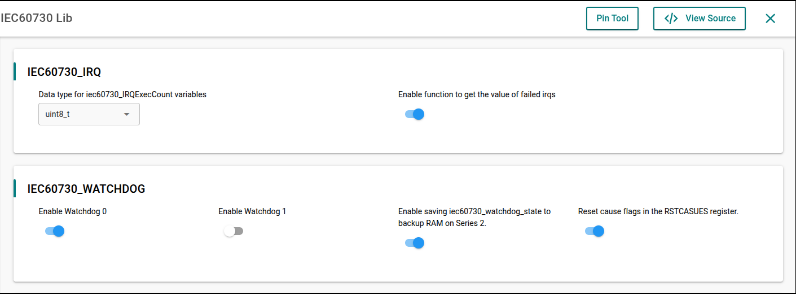
Figure 16 Configuration for watchdog module¶
The two define used to enable watchdog testing are used in the application:
#define SL_IEC60730_WDOG0_ENABLE
#define SL_IEC60730_WDOG1_ENABL
If these macros are not enabled, it will show an error saying watchdog checking is not enabled.
-
To clear reset cause flags in the RSTCASUES register after watchdog testing is completed. Enable configuration of the definition of macro
#define SL_IEC60730_RSTCAUSES_CLEAR_ENABLE. In our demo, this feature is enabled. -
The static variable
iec60730_watchdog_countmust be located at a memory location that is not cleared when system startup(section".ram_no_clear"). -
The global variable
iec60730_watchdog_statemust be located at a memory location that is not cleared when system startup(section ".ram_no_clear"). To enable savingiec60730_watchdog_stateto backup RAM on Series 2, enable the macro#define SL_IEC60730_SAVE_STAGE_ENABLE. By default, it will be disabled.Define macroSL_IEC60730_BURAM_IDXto select which register of the BURAM will be used. The default value is0x0UL.
4. Before calling the sl_iec60730_post function,we need to do the following steps:¶
-
Configure the clock for the timers. You can refer to these configurations in our demo examples, file
oem_iec60730_init_device.c. -
Create two timers with 10 milliseconds (ms) and 100 milliseconds (ms) interrupt periods (parameters 10ms and 100ms are recommended values) to test the clock and the clock switch. You can refer our demo example, file
oem_iec60730_timer.cfor more details. Note that adjusting the 10ms and 100ms values will require adjusting other configurationIEC60730_SYS_CLK:
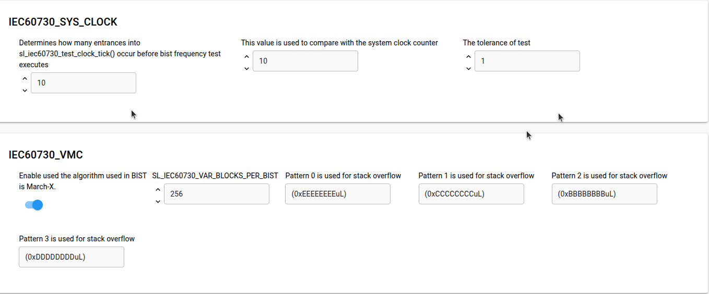
Figure 17 Configuration for system clock module¶
5. To perform a variable memory check, the library uses MarchC and MarchXC algorithms. It will have two options:¶
- Start from the user's specified address in RAM and continue to the end of the RAM region.
- Calculate multiple RAM regions by providing the starting and ending addresses for each one. For additional details, refer to the file oem_iec60730.c.
6. Before calling the sl_iec60730_bist function, we SHOULD set the flag for the sl_iec60730_program_counter_check variable. Some of the following flags are set by the Library IEC60730: IEC60730_VMC_COMPLETE,IEC60730_IMC_COMPLETE,IEC60730_CPU_CLOCKS_COM PLETE,and IEC60730_INTERRUPT_COMPLETE.¶
Other flags (IEC60730_GPIO_COMPLETE, IEC60730_ANALOG_COMPLETE,etc.) are up to you to develop additional test functions. The sl_iec60730_program_counter_check variable SHOULD set the flags corresponding to the unavailable test to ensure that the Program Counter Check is guaranteed.
In the demo examples,you will often see the following code.
sl_iec60730_program_counter_check |=IEC60730_GPIO_COMPLETE
| IEC60730_ANALOG_COMPLETE
| IEC60730_OEM0_COMPLETE
| IEC60730_OEM1_COMPLETE
| IEC60730_OEM2_COMPLETE
| IEC60730_OEM3_COMPLETE
| IEC60730_OEM4_COMPLETE
| IEC60730_OEM5_COMPLETE
| IEC60730_OEM6_COMPLETE
| IEC60730_OEM7_COMPLETE;
-
On demo eample, executes the external communication test that sets the
IEC60730_COMMS_COMPLETEflag by itself. -
The function
sl_iec60730_bistSHOULD be called in periodical task or a supper loop while(1).
7. Remember to increment the IRQ counter variable every time the interrupt to test occurs. You can refer to the oem_irq_exec_count_tick function in our demo examples.¶
void TIMERO_IRQHandler(void) {
...
oem_irq_exec_count_tick();
}
void oem_irq_exec_count_tick(void){
oem_irq_exec_count[0]++;
}
8. Create the function sl_iec60730_safe_state. The purpose of this function is to handle when an error occurs. An example of handling of this function refer files oem_iec60730_functions.c. After generating our demo example successfully, you also COULD add your code in file app.c and app.h¶
8. Revision history¶
| Revision | Date | Description |
|---|---|---|
| 0.1.0 | Oct 2021 | Initial Revision |
| 0.2.0 | Nov 2021 | Section 7: Added description for Watchdog |
| 0.3.0 | Mar 2023 | Remove Section 8. |
| 0.4.0 | Apr 2023 | Update document |
| 1.0.0 | Sep 2023 | Section 1: Added mention aboutEFM32PG22 and EFR32xG22devices. |
| 1.1.0 | June 2024 | Adding Section 3 and Section 4 for support creates a Library Extension Updated other sections for suit with the released package EFR32xG12 and EFR32xG24 devices. |
| 2.0.0 | Nov 2024 | Rewrite the documentation by the re-factory code of the library support device EFR32MG families. |
| 2.1.0 | Aug 2026 | Update the documentation to reflect the extension configuration changes that add support for the EFR32FG23 device family. |